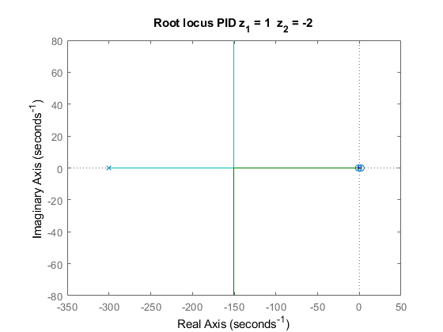

Simplified model for altitude control of a drone
Contents
- Initializing workspace
- Lab 4 - PID control
- Question 4.2 - root locus of PID open loop for different pairs of zeros
- Question 4.3 - finding K so poles are -1, -21 x 2, -224 for z_1=1, z_2=10
- Running the complete simulation for the data from question 4.3
- Question 4.4 - effect of a varying z1 and z2 with constant K and negative zeros
- Question 4.4 - effect of a varying z1 and z2 with constant K with at least one positive zero
- Question 4.4 - effect of a varying K with constant z1 and z2
- Lab 5 - Tracking error and disturbance rejection
- Question 5.4 - effect of disturbances with PD controller
- Question 5.6 - effect of disturbances with PID controller
- Question 5.6 - Effect of disturbances with PID controller (for greater values of K)
Initializing workspace
close all
clear
clc
Lab 4 - PID control
For this section (lab 4), we are studying a system that is in equilibrium until 1 second after the beginning of the simulation. This means that during that first second, the altitude remains constant at 2 meters, the vertical velocity is 0, as well as the acceleration. The parameters required to achieve this state are calculated here (for example rotor speed).
After the first second in equilibrium, we set the reference to 3 meters (or dZr to 1 meter, since Z0 is 2).
% Parameters for running the simulation finaltime = 5; StepSize = 0.01; % Problem parameters initial_step = 1; % s M = 1; % kg G = 9.8; % m/s^2 Kt = 3.575e-5; % N/(rad/s)^2 Z0 = 2; % m omega_0 = sqrt(G*M/Kt); % rad/s u_0 = omega_0; dZr = 1; % m fig_count = 1;
Question 4.2 - root locus of PID open loop for different pairs of zeros
% Transfer Function for proportional s = tf('s'); % Because these values enter the gain expression as (s+z), for a positive % value here, we have a zero on the left complex semiplane. z1_test = [0.5, 1, 2,300]; z2_test = [1, 10, 20,0.5]; % For K > 0 the root locus is for i = 1:length(z1_test) figure(fig_count) fig_count = fig_count+1; g_pid_ol_test = (s+z1_test(i))*(s+z2_test(i))/(s^3*(s+300)); rlocus(g_pid_ol_test); title(strcat("Root locus PID", " z_1 = ", num2str(z1_test(i)), " z_2 = ", num2str(z2_test(i)))) end
In all the previous plots we can see the movement of 4 poles. For K=0, 3 of them sit at the origin (Re = 0, Im = 0), and the other one is equal to -300. If we zoom in near the origin we can see that at first, 2 of the poles that sit at the origin will go to the right complex semiplane.
For example, for the zeros at = 1 and = 10, we see that the two poles in question are in the right complex semiplane when K is lower than 275. Therefore, the system is unstable for K lower than 275. For K = 275 (or close to it), the system is marginally stable, since we have 2 poles with zero real part and 2 poles in the left complex semiplane. For K greater than 275, we get 4 poles in the left complex semiplane, thus concluding that the system is stable. This is illustrated in the step response in section 4.4.
The behaviour is similar for other pairs of zeros, only differing on the value of K for which the system is marginally stable.
We will now analyse the root-locus for at least one positive zero (on the right complex semiplane).
% Because these values enter the gain expression as (s+z), for a negative % value here, we have a zero on the right complex semiplane z1_test_42b = [-1, 1]; z2_test_42b = [-2, -2]; % For K > 0 the root locus is for i = 1:length(z1_test_42b) figure(fig_count) fig_count = fig_count+1; g_pid_ol_test = (s+z1_test_42b(i))*(s+z2_test_42b(i))/(s^3*(s+300)); rlocus(g_pid_ol_test); title(strcat("Root locus PID", " z_1 = ", num2str(z1_test_42b(i)), " z_2 = ", num2str(z2_test_42b(i)))) end
In both the previous plots we can see the movement of 4 poles. For K=0, 3 of them sit at the origin (Re = 0, Im = 0), and the other one is equal to -300.
We will first look at the root locus for zeros at 1 and 2 (figure 4). In this root locus, we can see that whatever the value of K, we always have 2 poles on the right complex semiplane, which means the system is unstable.
For the second pair, we have zeros at -1 and 2. Again, we can see in the root locus that for every value of K, we always have 1 pole on the right complex semiplane, so the system is again unstable.
The step response for both these situations is illustrated in section 4.4.
From this analysis, we conclude that a system that has zeros in the left complex semiplane is only stable if K is greater than a certain value that depends on the values of and . A system that has zeros on the right complex semiplane is always unstable, regardless of the value of K.
Question 4.3 - finding K so poles are -1, -21 x 2, -224 for z_1=1, z_2=10
In this section, we plot the root locus for = 1 and = 10, in other words, for the system with zeros in -1 and -10. We then search for the gain K for which the poles are -1, -21 (double pole) and -224.
z1 = 1; z2 = 10; % open loop transfer function of PID g_pid_ol = (s+z1)*(s+z2)/(s^3*(s+300)); figure(fig_count) fig_count = fig_count+1; rlocus(g_pid_ol); [r_procura,k_procura] = rlocus(g_pid_ol); title('Root locus for PID z_1 = 1 z_2 = 10') % Search algorithm for the K to get the desired poles. for j = 1:length(k_procura) if(abs(r_procura(1,j) - (-1))< 0.01 && ... imag(r_procura(2,j)) < 0.0001 && ... abs(r_procura(3,j) - r_procura(2,j)) < 0.0001 && ... imag(r_procura(4,j)) < 0.0001) k_alvo = k_procura(j); polo_alvo = r_procura(1,j); break end end % Computing coefficients from the K found kd_procura = k_alvo * M/600/Kt/omega_0; kp_procura = kd_procura*(z1+z2); ki_procura = kd_procura*z1*z2;
Running the complete simulation for the data from question 4.3
Kd = kd_procura; Kp = kp_procura; Ki = ki_procura; simout_tot = sim('total_lab4','StopTime',num2str(finaltime),'FixedStep',num2str(StepSize)); % Plotting the step response of the closed-loop linear system with the % PID controller. figure(fig_count) fig_count = fig_count+1; plot(simout_tot.get('z_pid').time, simout_tot.get('z_pid').signals.values); xlabel('time (s)') ylabel('z (m)') title({strcat("Altitude ", "dZr = ", num2str(dZr), " m"),... strcat('z_1 = ', num2str(z1), 'z_2 = ', num2str(z2), ' K_p = ',... num2str(Kp), ' K_i = ', num2str(Ki), ' K_d = ', num2str(Kd))}) legend('PID','Location','southeast');
In this figure, we have the representation of the step response for a system with 2 negative zeros (-1 and -10), with a gain that is greater than 275 (K = 11740). Here we confirm what was expected by looking at the root-locus for this kind of parameters in section 4.2. As expected , for both the zeros negative and a gain greater than 275 (for zeros at -1 and -10), the system is stable, thus converging to the reference altitude.
Question 4.4 - effect of a varying z1 and z2 with constant K and negative zeros
finaltime = 8;
K_44a = 11740;
z1_44a = [0.5, 1, 2];
z2_44a = [1, 10, 20];
legendcella = {};
for i = 1:length(z1_44a)
Kd = K_44a * M/600/Kt/omega_0;
Kp = Kd*(z1_44a(i)+z2_44a(i));
Ki = Kd*z1_44a(i)*z2_44a(i);
simout_tot = sim('total_lab4','StopTime',num2str(finaltime),'FixedStep',num2str(StepSize));
figure(fig_count)
plot(simout_tot.get('z_pid').time, simout_tot.get('z_pid').signals.values);
hold on
xlabel('time (s)')
ylabel('z (m)')
title(strcat("Altitude ", "dZr = ", num2str(dZr), " m For constant K = 11740"))
legendcella = [legendcella, cellstr(strcat( "z_1 = ", num2str(z1_44a(i)), " z_2 = ", num2str(z2_44a(i))))];
end
fig_count = fig_count+1;
legend(legendcella,'Location','southeast');
In this figure, we can see the step response for a constant K for negative zeros. Here we can see that the smaller (the real part of) the zero is (the greater its absolute value, since it is negative), the smaller is the time the system takes to converge.
Looking at the root locus from section 4.2 we can understand why. A lower value of zero "pulls" the poles to a more negative (real) value (for the same K).
Question 4.4 - effect of a varying z1 and z2 with constant K with at least one positive zero
finaltime = 8; K_44a = 11740; z1_44a = [-1 1]; z2_44a = [-2 -2]; for i = 1:length(z1_44a) Kd = K_44a * M/600/Kt/omega_0; Kp = Kd*(z1_44a(i)+z2_44a(i)); Ki = Kd*z1_44a(i)*z2_44a(i); simout_tot = sim('total_lab4','StopTime',num2str(finaltime),'FixedStep',num2str(StepSize)); figure(fig_count) fig_count = fig_count+1; plot(simout_tot.get('z_pid').time, simout_tot.get('z_pid').signals.values); hold on xlabel('time (s)') ylabel('z (m)') title(strcat("Altitude ", "dZr = ", num2str(dZr), " m For constant K = 11740")) legend(strcat( "z_1 = ", num2str(z1_44a(i)), " z_2 = ", num2str(z2_44a(i)))) end
In these two figures, we present the step response for at least one zero in the right complex semiplane. As we were expecting from the root-locus of Q4.2, in both cases the system diverges. We therefore conclude that the system can't be stable if there are any zeros on the right complex semiplane.
Question 4.4 - effect of a varying K with constant z1 and z2
finaltime = 5;
K_44b = [150, 275, 1000, 11740];
z1_44b = z1;
z2_44b = z2;
legendcellb = {};
for i = 1:length(K_44b)
Kd = K_44b(i) * M/600/Kt/omega_0;
Kp = Kd*(z1_44b+z2_44b);
Ki = Kd*z1_44b*z2_44b;
simout_tot = sim('total_lab4','StopTime',num2str(finaltime),'FixedStep',num2str(StepSize));
figure(fig_count)
plot(simout_tot.get('z_pid').time, simout_tot.get('z_pid').signals.values);
hold on
xlabel('time (s)')
ylabel('z (m)')
title(strcat("Altitude ", "dZr = ", num2str(dZr), " m For constant z_1 = 1, z_2 = 10"))
legendcellb = [legendcellb, cellstr(strcat('K = ', num2str(K_44b(i))))];
end
fig_count = fig_count+1;
legend(legendcellb,'Location','northwest');
Here we used the zeros from Q4.3. ( = 1 and = 10) and varied the value of K. As we can see, for values greater than 275, the PID cannot stabilize the system. For K = 275, the system is marginally stable. For values greater than 275, the PID controller is able to stabilize the system on the reference value. We can also see that the greater the value of K, the faster the system converges.
All these conclusions were in according to the root-locus from Q4.2.
Lab 5 - Tracking error and disturbance rejection
For this section (lab 5), we are studying a system that is initially in equilibrium This means that before starting the simulation, the altitude remains constant at 2 meters. The vertical velocity is 0, as well as the acceleration. The parameters required to achieve this state were calculated in lab 4. In this section, we set the value of the disturbances to the constant value of 50 rpm, as defined in the lab assignment.
Here, since we only want to study the effect of the disturbances of the system and not its response to a reference altitude, we set this parameter to 0 (dZr = 0).
Question 5.4 - effect of disturbances with PD controller
First we study the effect of varying the proportional gain Kp. For this, we keep Kd constant, as well as the zero.
% Parameters for running the simulation finaltime = 5; StepSize = 0.01; % For this set of data, we exemplify the difference in response of the % analysed systems. dZr = 0; % m Kd_54a = 106.14; Kp_54a = [89.04 106.14 500 1060 5300]; z_pd = 1; w_d_rpm = 50; % constant disturbance of 50rpm w_d = w_d_rpm/60*2*pi; legendcell54a = {}; for i = 1:length(Kp_54a) Kd = Kd_54a; Kp = Kp_54a(i); % Defining the parameters for the simulation. K_prop_der = 600*Kd*Kt*omega_0/M; % proportional-derivative controller gain z = Kp/Kd; simout_tot = sim('total_lab5','StopTime',num2str(finaltime),'FixedStep',num2str(StepSize)); figure(fig_count) plot(simout_tot.get('z_pd').time, simout_tot.get('z_pd').signals.values); hold on xlabel('time (s)') ylabel('z (m)') title(strcat("PD with disturbance - Altitude ", "dZr = ", num2str(dZr), " m z = 1", " K_d = ", num2str(Kd_54a))) legendcell54a = [legendcell54a, cellstr(strcat('K_p = ', num2str(Kp_54a(i))))]; end for i = 1:length(Kp_54a) Kd = Kd_54a; Kp = Kp_54a(i); figure(fig_count) hold on yline(Z0+dZr + w_d/Kp, '--'); end legendcell54a = [legendcell54a, cellstr('Theo. value ss out')]; set(gca, 'YLimSpec', 'stretch'); fig_count = fig_count+1; lgd2= legend(legendcell54a,'Location','Northwest'); lgd2.FontSize = 6;
This plot shows the effect has on the system response when and are kept constant. The PD controller does not completely mitigate the disturbances. As was predicted in the theoretical questions, the PD controller will have a steady-state output of 50/K_p. This means that for an initial altitude of z = 2 metres, the output of the system will approach 2 + 50/K_p (the dotted lines). We therefore conclude that the greater the Kp, the closer we can get to the desired output (in this case 2). With the increase of Kp, however, also comes a decrease in the damping of the system.
We can also note that for a PD system like this, the steady-state tracking error is 0. This is expected, since the PD closed-loop in Q5.1 is of type 2. This can be explained by the open-loop transfer function having 2 poles at the origin.
Next we study the effect of varying the derivative gain Kd.
% Parameters for running the simulation finaltime = 5; StepSize = 0.01; % For this set of data, we exemplify the difference in response of the % systems analysed. dZr = 0; % m Kd_54b = [20 89.04 106.14 500 1500]; Kp_54b = 106.14; z_pd = 1; w_d_rpm = 50; w_d = w_d_rpm/60*2*pi; legendcell54b = {}; for i = 1:length(Kd_54b) Kd = Kd_54b(i); Kp = Kp_54b; % Defining the parameters for the simulation. K_prop_der = 600*Kd*Kt*omega_0/M; % proportional-derivative controller gain z = Kp/Kd; simout_tot = sim('total_lab5','StopTime',num2str(finaltime),'FixedStep',num2str(StepSize)); figure(fig_count) plot(simout_tot.get('z_pd').time, simout_tot.get('z_pd').signals.values); hold on xlabel('time (s)') ylabel('z (m)') title(strcat("PD with disturbance - Altitude ", "dZr = ", num2str(dZr), " m z = 1", " K_p = ", num2str(Kp_54b))) legendcell54b = [legendcell54b, cellstr(strcat('K_d = ', num2str(Kd_54b(i))))]; end for i = 1:length(Kd_54b) Kd = Kd_54b(i); Kp = Kp_54b; figure(fig_count) hold on yline(Z0+dZr + w_d/Kp, '--'); end legendcell54b = [legendcell54b, cellstr('Theo. value ss out')]; set(gca, 'YLimSpec', 'stretch'); fig_count = fig_count+1; lgd1 = legend(legendcell54b,'Location','Northeast'); lgd1.FontSize = 6;
This plot shows the effect has on the system response when and are kept constant. The response converges to 2 + 50/K_p like expected, but varies in the way it approaches this value. For lower than 89.04, there are oscillations around this value. The system is underdamped. For equal to 89.04, the system is critically damped. For larger than 89.04, the response slowly converges to this value without oscillations. The system is overdamped.
Question 5.6 - effect of disturbances with PID controller
% Here our goal was to observe the effect of the disturbances. For that, we % set dZr to zero. dZr = 0; % m K_56 = [150, 275, 1000]; z1 = 1; z2 = 10; w_d_rpm = 50; w_d = w_d_rpm/60*2*pi; legendcellb = {}; for i = 1:length(K_56) Kd = K_56(i) * M/600/Kt/omega_0; Kp = Kd*(z1+z2); Ki = Kd*z1*z2; simout_tot = sim('total_lab5','StopTime',num2str(finaltime),'FixedStep',num2str(StepSize)); figure(fig_count) plot(simout_tot.get('z_pid').time, simout_tot.get('z_pid').signals.values); hold on xlabel('time (s)') ylabel('z (m)') title(strcat("PID with disturbance - Altitude ", "dZr = ", num2str(dZr), " m z_1 = -1, z_2 = -10")) legendcellb = [legendcellb, cellstr(strcat('K = ', num2str(K_56(i))))]; end yline(Z0+dZr, '--'); legendcellb = [legendcellb, cellstr('Theo. value ss out')]; fig_count = fig_count+1; legend(legendcellb,'Location','Southwest');
Question 5.6 - Effect of disturbances with PID controller (for greater values of K)
dZr = 0; % m K_56 = [10000, 11740]; z1 = 1; z2 = 10; w_d_rpm = 50; w_d = w_d_rpm/60*2*pi; legendcellb = {}; for i = 1:length(K_56) Kd = K_56(i) * M/600/Kt/omega_0; Kp = Kd*(z1+z2); Ki = Kd*z1*z2; simout_tot = sim('total_lab5','StopTime',num2str(finaltime),'FixedStep',num2str(StepSize)); figure(fig_count) plot(simout_tot.get('z_pid').time, simout_tot.get('z_pid').signals.values); hold on xlabel('time (s)') ylabel('z (m)') title(strcat("PID with disturbance - Altitude ", "dZr = ", num2str(dZr), " m z_1 = -1, z_2 = -10")) legendcellb = [legendcellb, cellstr(strcat('K = ', num2str(K_56(i))))]; end yline(Z0+dZr, '--'); legendcellb = [legendcellb, cellstr('Theo. value ss out')]; ylim([Z0-0.00001 inf]); fig_count = fig_count+1; legend(legendcellb,'Location','Northeast');
These two plots show the response of the PID controller to a constant disturbance of 50 rpm and = 1, = 10. For K lower than 275, the disturbance isn't attenuated and the response will diverge (similarly to what happened in the normal step response of the system for these parameters in Q4.4). For K = 275, the response oscillates at a constant amplitude around 2. For values of K larger than 275, the response converges to 2 and the disturbance is attenuated. Unlike the PD controller, the steady-state output does not depend on and instead (if K is large enough as to converge) will always be 2.
We can also note that for a PID system like this, the steady-state tracking error is 0. This is expected, since the PID closed-loop in Q5.2 is of type 3. This can be explained by the open-loop transfer function having 3 poles at the origin.